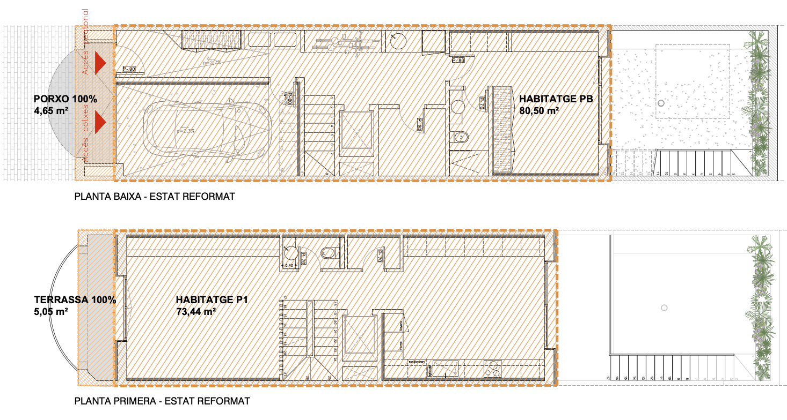
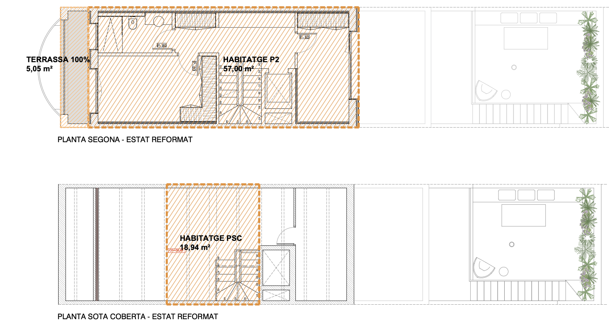
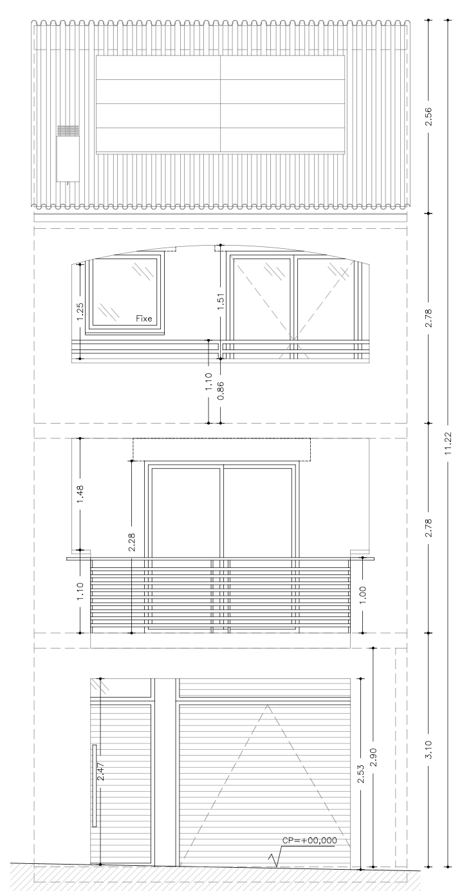
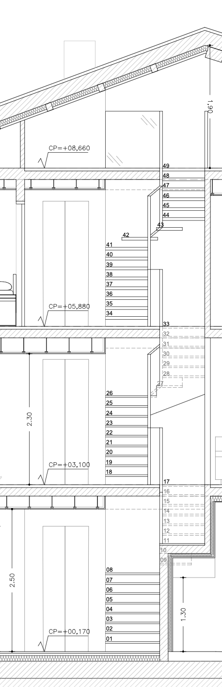
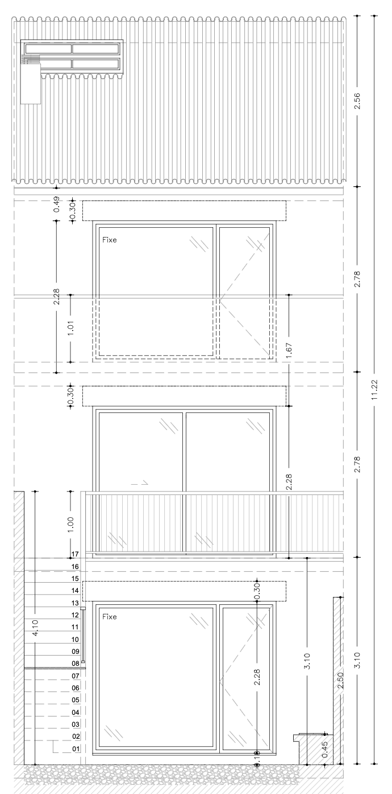
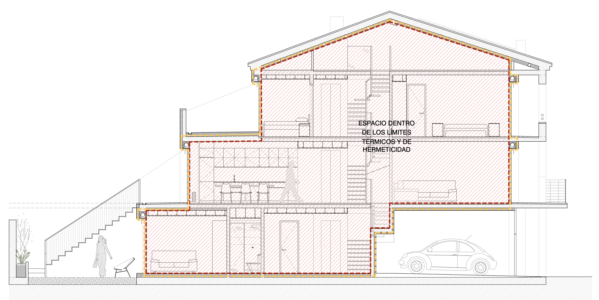
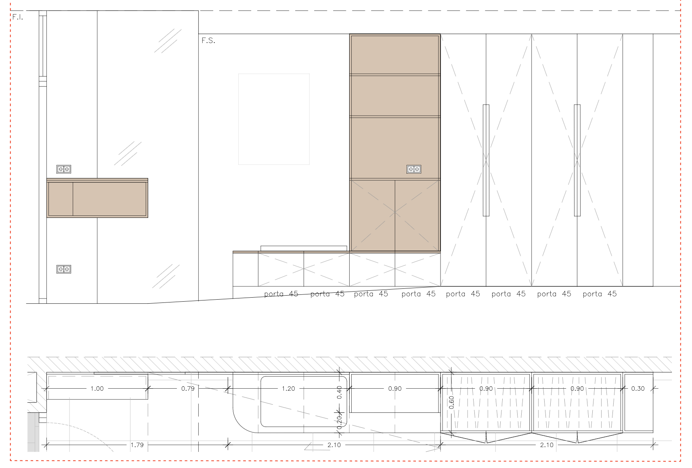
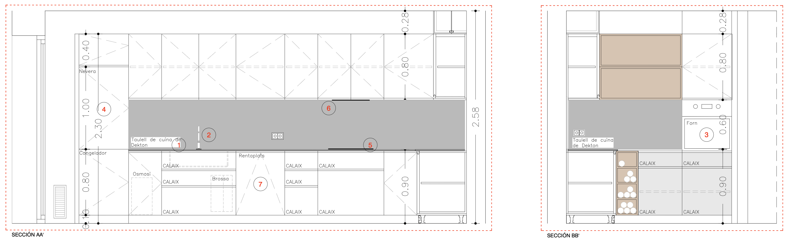
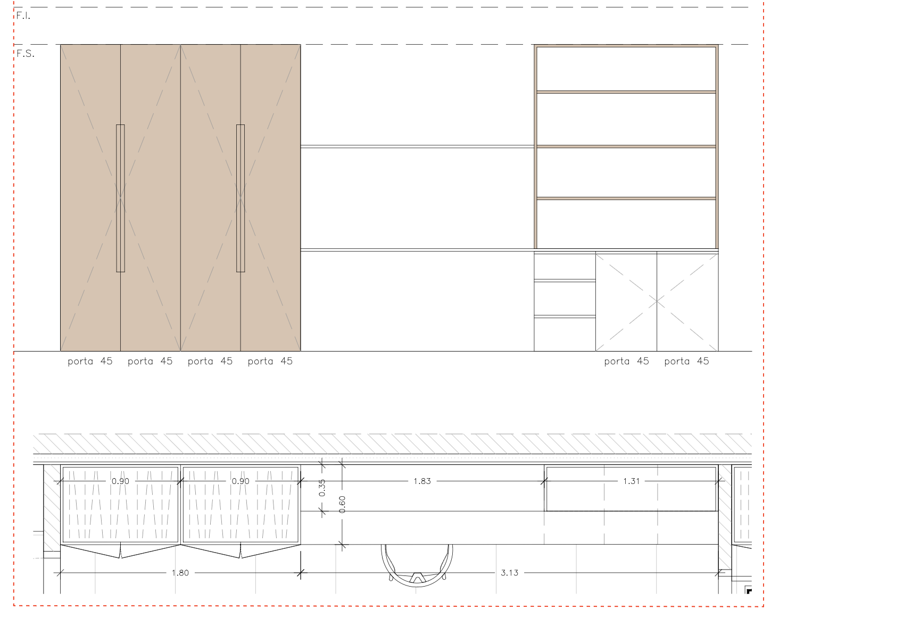
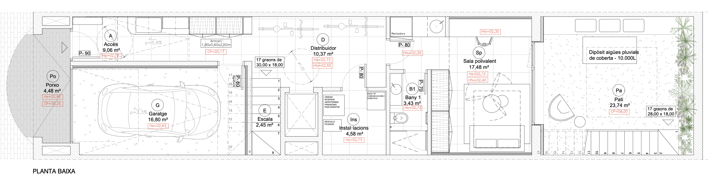

La reforma de la Casa RSM
Plantejament de la reforma
El projecte de reforma integral de la Casa RSM té com a bases l'eficiència energètica i l'accessibilitat universal, adaptant l'habitatge original a les necessitats d'ús actuals i futures.


Accessibilitat universal
Pel que fa a l'accessibilitat, s'eliminen les barreres arquitectòniques en planta baixa, dissenyant un accés pla de carrer (vestíbul) i preparant un estudi polivalent convertible en dormitori adaptat. La connexió entre plantes queda prevista mitjançant l'espai per a un ascensor domèstic que arriba fins al segon pis. A més, es crea un nou accés vertical exterior mitjançant una escala des de la terrassa de la planta primera directament cap al pati.



Eficiència energètica i EnerPHit
En termes d'eficiència, el projecte adopta criteris de l'estàndard de rehabilitació energètica EnerPHit (Passivhaus). Això es tradueix en un aïllament continu (sistema SATE transpirable), finestres de triple vidre i un sistema de climatització que inclou Ventilació Mecànica Controlada (VMC) de doble flux. A més, s'instal·laran plaques fotovoltaiques a la coberta i s'utilitzarà la bateria d'un cotxe elèctric per a emmagatzemar l'excedent de producció (integració bidireccional V2H), tot gestionat de manera intel·ligent per aconseguir un consum d'energia gairebé nul.
Millora de la qualificació energètica
Actualment, l'edifici té una qualificació energètica baixa de classe E (amb un consum de 163 kWh/m² a l'any). Després de la reforma integral, l'habitatge superarà àmpliament els llindars de la classe A, estimant una reducció dràstica del consum fins a valors d'aproximadament 15-20 kWh/m² a l'any gràcies a l'alta eficiència aconseguida.

Cicle de l'aigua i pati bioclimàtic
Així mateix, es dissenya un cicle de gestió d'aigua mitjançant la recollida de les aigües de pluja en un dipòsit soterrat sota el pati. Aquest recurs permetrà mantenir un pati bioclimàtic mediterrani, actuant com un regulador tèrmic natural de l'aire per evaporació que contribueix directament a l'eficiència energètica de la casa.
Domòtica i control del consum
En l'àmbit de la gestió de l'habitatge, s'implementa un sistema domòtic (DIY) que centralitza la il·luminació, el control de la climatització i el monitoratge del consum energètic. Aquest sistema permet programar i automatitzar el comportament de les diferents instal·lacions a través d'una interfície local senzilla, facilitant l'adaptació del consum a les necessitats reals i diàries d'ús de la casa.
Sinergies de confort i funcionament
Tot aquest plantejament integral d'eficiència i bioclimatització permetrà gaudir d'una llar amb un nivell de confort molt elevat, tal com s'il·lustra en el següent esquema de funcionament i conceptes clau:

Fusteria i banys
Detall dels plànols de fusteria feta a mida (armaris) i dels espais de bany. Els acabats combinen superfícies lacades en blanc i fusta de roure clar segons l'estança.
Armari del vestíbul
Ubicat a la planta baixa, aquest armari encastat a la paret de terra a sostre compta amb portes lacades en blanc per integrar-se visualment de manera neta amb els paraments verticals de l'entrada.

Fusteria de la cuina
Mobiliari integrat per a la cuina de la planta primera. Combina acabats de fusta de roure clar en els prestatges i mobles inferiors amb portes lacades en blanc per a les columnes d'emmagatzematge.

Armari i taula d'estudi
Mobiliari a mida per a la planta segona que unifica la zona de treball amb armaris encastats, realitzats amb acabat de fusta de roure clar.

Explorador del projecte per plantes
Selecciona una planta per visualitzar el plànol de distribució. Clica sobre els punts indicadors per veure els renders 3D associats i els detalls de disseny de cada espai.


Vestíbul d'Entrada
El vestíbul d'entrada està dissenyat a nivell de carrer, sense barreres arquitectòniques per facilitar l'accés a l'habitatge.
Simulador de colors i variants
A l'espera dels renders finals de colors i tancaments per part de l'arquitecte per prendre les últimes decisions, utilitza aquest simulador per previsualitzar les diferents alternatives plantejades en fusteries, distribucions i materials.